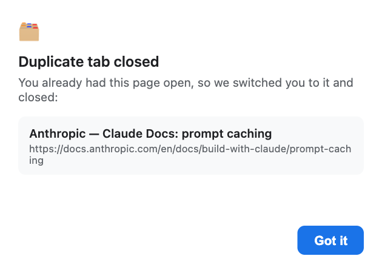
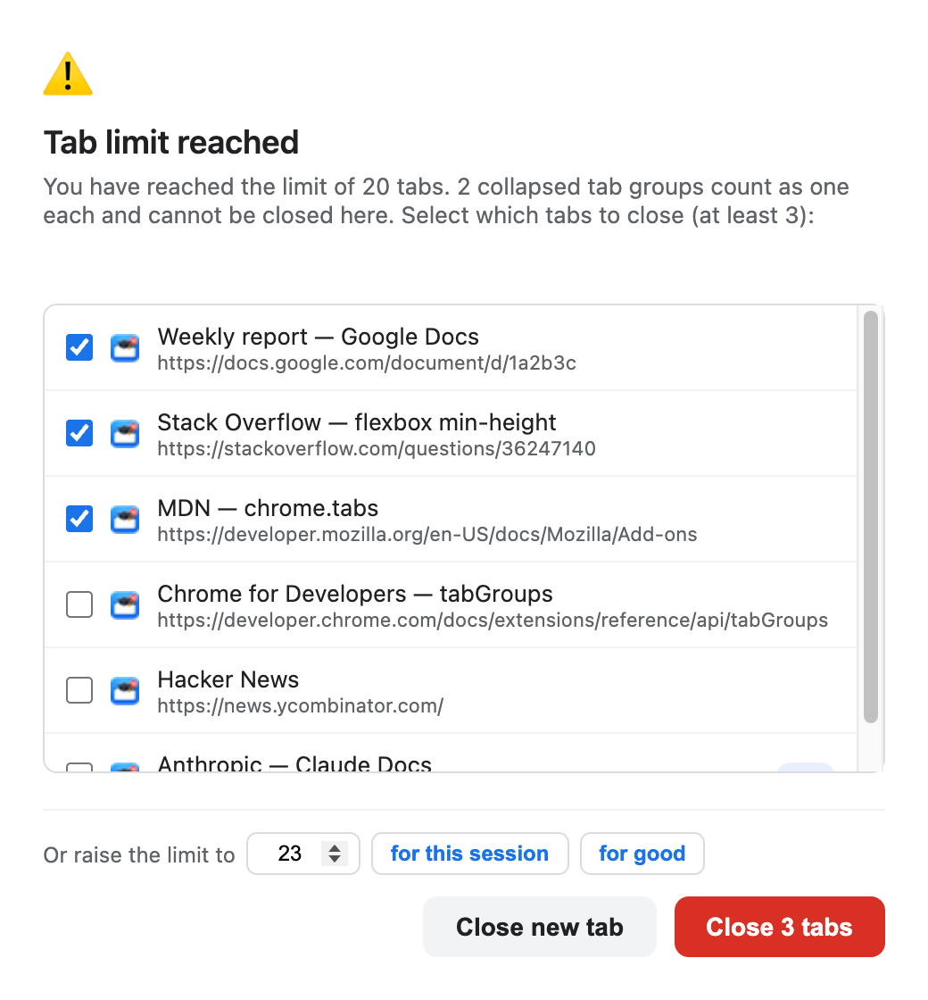
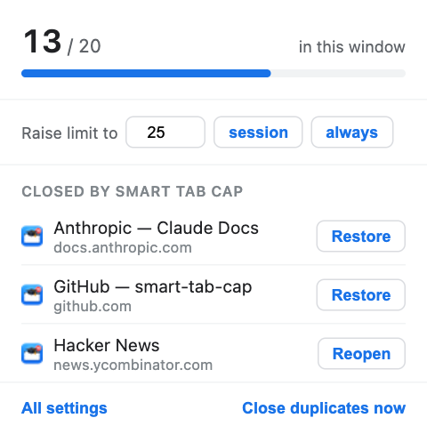

You have too many tabs open.
Tabs in this window
Under the limit. Nothing to do.
Smart Tab Cap reuses the tab you already had open — and when you reach your limit, it tells you in a way you cannot ignore.
-
01 / No duplicates
You land on the tab you already had
Open a URL that is already open somewhere and it switches you there, closes the new tab, and says what it did. Tracking parameters and trailing slashes do not fool it.
-
02 / A limit that holds
Not a notification you swipe away
The confirmation comes back to the front if you click elsewhere, un-minimises itself, and reopens if you close it. Tabs you open while it waits are closed immediately.
-
03 / A real undo
The tab comes back, not just its URL
Restored with its back-history and scroll position. When Chrome can no longer do that, the button relabels itself instead of quietly doing less.
01 / Duplicates
One page, one tab
The comparison ignores the URL fragment, a trailing slash and tracking
parameters — utm_*, fbclid, gclid and
friends — so the same article shared two different ways is recognised as one
page.
Three match modes, from exact URL (the default, and the safe one) to same domain only, which is aggressive enough that the settings panel warns you when you pick it.

02 / The limit
Choose, or raise the bar
Pre-ticked are the tabs it would have closed on its own. Change the selection freely — Confirm stays disabled until you have selected enough. Only tabs that may actually be closed are listed: nothing playing sound, nothing inside a collapsed group.
Or raise the limit is the way out that costs you no tabs. The minimum offered is what currently counts, so raising it always resolves the window instead of reopening it — for this session, or permanently.

The limit is not a suggestion.
03 / The popup
Current state, and the two things you want
The count is what the limit is measured against — not the raw number of tabs. The bar turns amber two below the limit and red when you reach it.
Restore brings a tab back with its history and scroll position; Reopen appears when only the URL survives. Close duplicates now sweeps every window on the spot.

04 / Arithmetic
The limit counts what you see
Which is not always the number of tabs. A collapsed group is one item on your tab strip, so it is one item to the limit — and it is never offered for closing, because sacrificing it would destroy every tab inside to reclaim a single slot.
| Situation | Notes | Counts as |
|---|---|---|
| An ordinary tab | 1 | |
| Four tabs in an expanded group | 4 | |
| The same group collapsed | One item on the strip | 1 |
| A pinned tab | If Don't count pinned tabs is on | 0 |
A chrome:// page | If Ignore browser internal tabs is on | 0 |
| A tab on an excepted domain | Subdomains included | 0 |
| A tab playing sound | It counts — it is just never the one closed | 1 |
05 / Permissions
Four, and none of them read the page
There is deliberately no host permission. An earlier design put the duplicate notice inside the surviving tab, which would have required injecting a script into every page you visit — and the “read and change all your data on all websites” warning. It was rejected in favour of a small popup window.
| Permission | Chrome's warning | Why it is needed |
|---|---|---|
tabs | Read your browsing history | To see tab URLs and titles at all — comparing URLs is the whole duplicate feature |
tabGroups | View and manage your tab groups | Only to read whether a group is collapsed; membership comes free with tabs, collapsed state does not |
sessions | Read your browsing history on all your signed-in devices | The widest-sounding warning, and the price of a real undo instead of just reopening a URL |
storage | — none — | Your settings and the closed-tab history |
06 / Install
About a minute, by hand
- Download the zip from the latest release — 46 KB.
- Unzip it somewhere permanent — your home folder, not Downloads. Chrome loads the extension from that folder every time it starts.
- Open
chrome://extensionsand turn on Developer mode, top right. - Click Load unpacked and select the unzipped
smart-tab-cap/folder — the one containingmanifest.json.
There is no Chrome Web Store listing, so Developer mode has to stay on — Chrome disables unpacked extensions when it is switched off, and shows a warning on each restart that you can dismiss.
Updating
Unzip the newer version over the same folder, then press ↻ on the extension's card. Keeping the path identical matters: Chrome derives an extension's identity from its folder, so a new location registers as a second, separate extension.
Your settings survive either way — they live in Chrome's synced storage, not in the folder.
07 / Honestly
Where it falls short
- Not a true modal
Chrome extensions cannot block interaction with the browser. The confirmation window approximates one — it can still be clicked away from.
- No group names
Reading a group's title needs more than its collapsed state does, and it was not worth widening a permission for a label.
- Session restore expires
Chrome's recently-closed list rolls over, so old entries fall back to reopening the URL.
- Five seconds on startup
Session restore repopulates tabs asynchronously, so enforcement waits rather than judging a half-restored window.
08 / Under the hood
No build step. None.
Dependencies
0
No bundler, no package manager, no transpiler. Plain JavaScript that Chrome loads as written.
Tests
88
Node's built-in
runner, nothing to install: node --test test/*.test.js